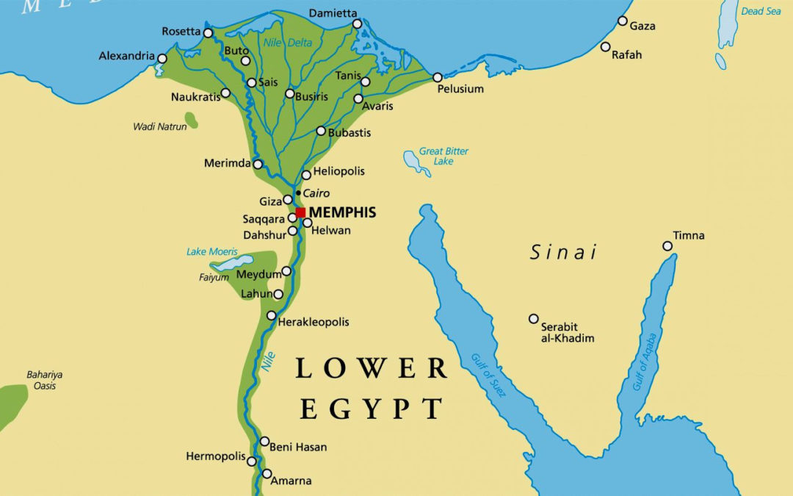

Location
Ancient Egypt was a civilization of ancient North Africa, concentrated along the lower reaches of the Nile River, situated in the place that is now the country Egypt. Ancient Egyptian civilization followed prehistoric Egypt and coalesced around 3100 BC (according to conventional Egyptian chronology)[1] with the political unification of Upper and Lower Egypt under Menes. The history of ancient Egypt occurred as a series of stable kingdoms, separated by periods of relative instability known as Intermediate Periods: the Old Kingdom of the Early Bronze Age, the Middle Kingdom of the Middle Bronze Age and the New Kingdom of the Late Bronze Age.